GRADIUS2の秘密
MSX2+の横スクロール機能を使ったシューティングゲームとしてはLAYDOCK2が有名ですが、実はGRADIUS2も横スクロール機能をサポートしているという噂が有ります。
それを確認するため、今回はMSX2+を作ってみます。元となるのは先日V9958を載せたHB-F500。しかしながらV9958を載せたとは言え、BIOS ROMが無いことには始まりません。ここでは、手持ちのFS-A1WXから吸い出してみます。LEDを載せ替えた3倍速対応品ですが、埃をかぶっています・・・。
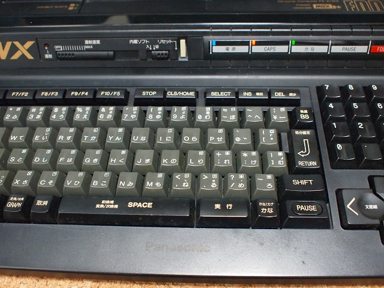
まずはfMSX98に含まれている"MAKEROM.BAS"を使ってROMを吸い出します。
まずはHB-F500で実行し、以下のファイルを入手します。
MSX2.ROM
MSX2EXT.ROM
DISK.ROM
次にFS-A1WXで実行しますが、よく知られている通り暴走します。DISK.ROMを抜き出す行をREM文にすれば良いのですが、その後にできあがるFMBIOS.ROMは中身は別のROMらしく意味がありません。とりあえず暴走前に以下のファイルができあがるのでそれで十分です。
MSX2P.ROM
MSX2PEXT.ROM
ちなみに・・・
DISK.ROMはつじかわさん作の"KSAVER.COM"で抜き出せます。
FMBIOS.ROMはにがさん作の"NSSAVE.COM"で抜き出せます。NSTOOLに含まれています。FS-A1WXの場合は"/S88"です。
IC49(写真左)の32kB ROMの中身は"MSX2.ROM"ですので"MSX2P.ROM"に入れ替えます
IC58(写真右)の32kB ROMの中身は"MSX2EXT.ROM"(16kB)と"DISK.ROM"(16kB)ですので、"MSX2EXT.ROM"の部分を"MSX2PEXT.ROM"に入れ替えます。"DISK.ROM"もFS-A1WXのものに入れ替えてみましたが正常に起動しませんでしたので、HB-F500のものをそのまま使っています。SONY系とPanasonic系ではFDCが異なるため、うまく動かないのかも知れません。SONYのMSX2+を入手することがあれば試してみます。
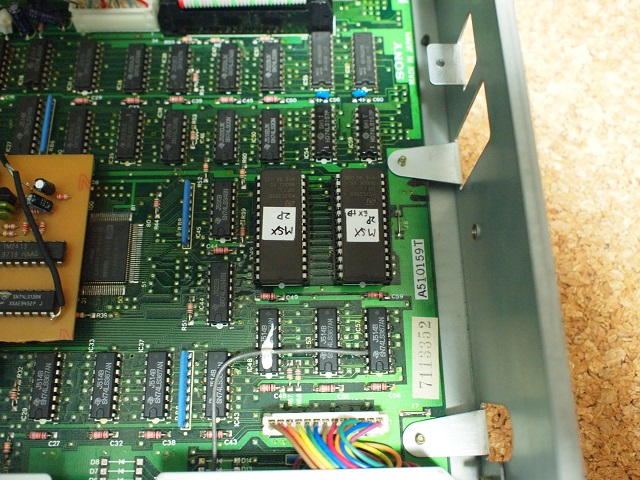
と、いうことでMSX2+相当ができあがりました。
早速GRADIUS2を動かしてみた結果がこれです。左がMSX2版GRADIUS2、右がMSX2+版GRADIUS2を動作させたものです。
さて、本題ですがFRSさんのサイトにGRADIUS2のROMに当てるパッチファイルがあります。GRADIUS2のROMファイルを抜き出し、Windows上でXPCtoolsを使ってパッチを当て、おなじみ似非SCCに入れることになります。ここで注意しなければならないのは、パッチを当てたROMファイルは元のファイルより大きくなっていることです。従って128kBの似非SCCには書き込めません。また、ファイルサイズが似非SCCのバンクサイズ(8kB)の等倍になっていないのでMGLOAD.ROM等で書き込むとエラーが出ます。バイナリエディタ等を使って後ろに"00"を追加してちょうど良いサイズにする必要があります。私は256kBにしました。
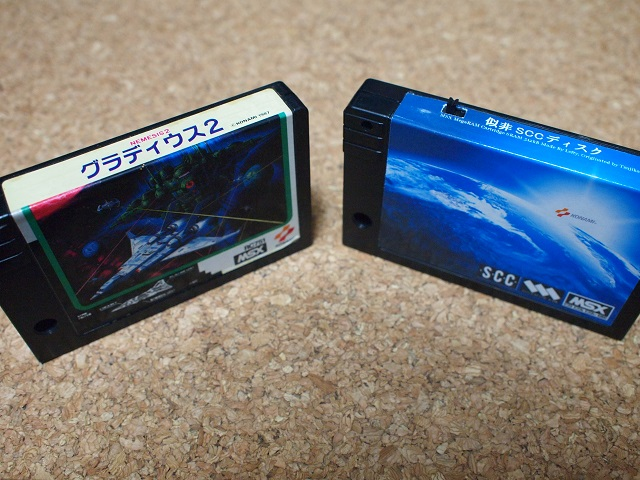
左が吸い出し元のGRADIUS2、右が似非SCCです。にがさんに頂いたラベルを貼付しています。
GRADIUS2にはバージョン違いがあってパッチを当てても正常動作しないものがあるという噂があります。TINY野郎さんがどうすれば良いのか公開（？）されていましたが、検証の意味も含めてまずは解析。
パッチ後に正常動作するGRADIUS2(GRA2_OK)と動作しないもの(GRA2_NG)をバイナリエディタで比較してみたところ相違点が推定1,000箇所以上あったため、解析を断念・・・。
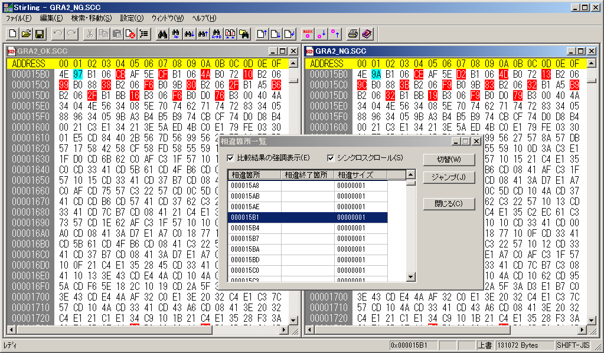
仕方ないのでまずはパッチを解析することにしました。正常に動作するものパッチ前(GRA2_OK、図の左)とパッチ後(GRA2_OK2、図の右)を比較すると異なる場所は22箇所でした。水色の場所がカーソルのあるところ、赤色の場所（と水色の場所）が相違点です。最初の部分を見てみると0000 0039hが"75"から"6F"に置き換わっているのが分かります。
xpctools1.0_win32.zipの中にxpcviewer.exeというプログラムがあり、それを使ってもどうパッチが当てられているか分かると教えて頂きました。気づきませんでした・・・。ま、まぁ、後でこのパッチにパッチを当てることを考えると、ここで構造を理解しておいた方が良いでしょう・・・と言ってみます(^-^;
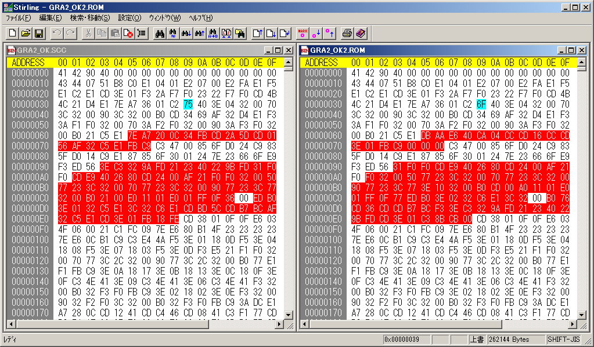
あとはパッチをあてている場所が、GRA2_OKとGRA2_NGで同じであれば問題無いはず。パッチを当てている22箇所についてチェックすると4箇所違う部分がありました。
まずは1箇所目、パッチ前(左)とパッチ後(右)の水色の部分に注目します。
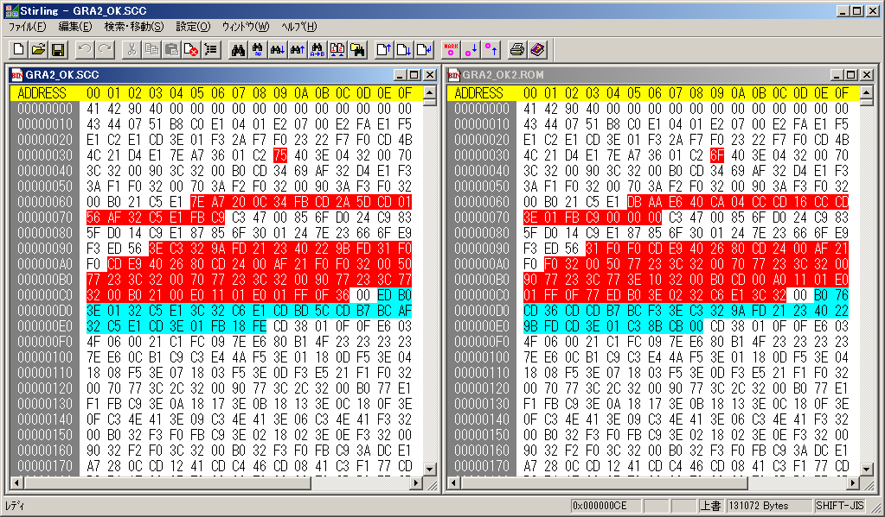
この部分に対してGRA2_OK(左)とGRA2_NG(右)の比較は以下の通り。
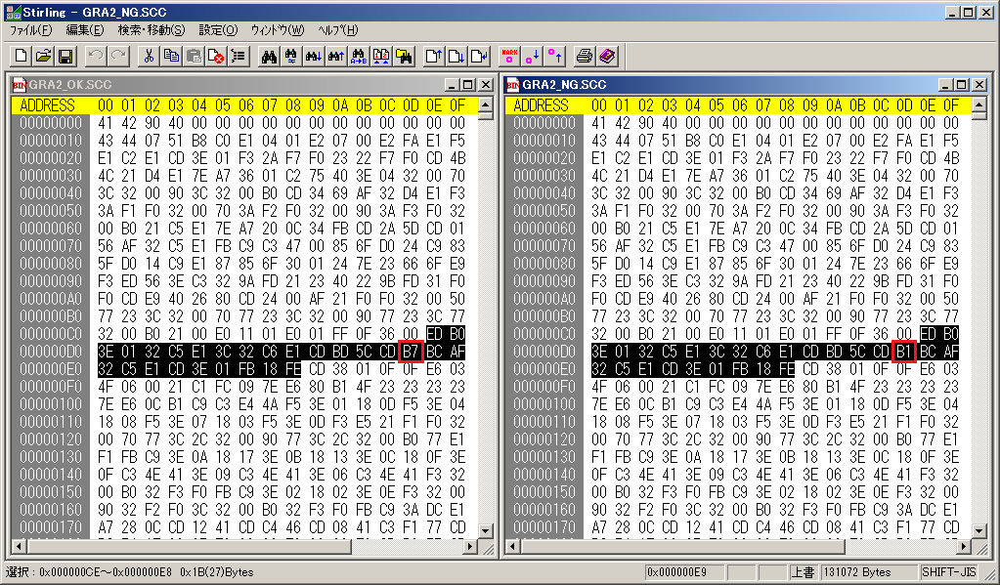
黒い部分(00CEh〜00E8h)がパッチ箇所ですが、その中で00DDhが"B7"と"B1"で異なっています。
残りの3箇所は固まっています。
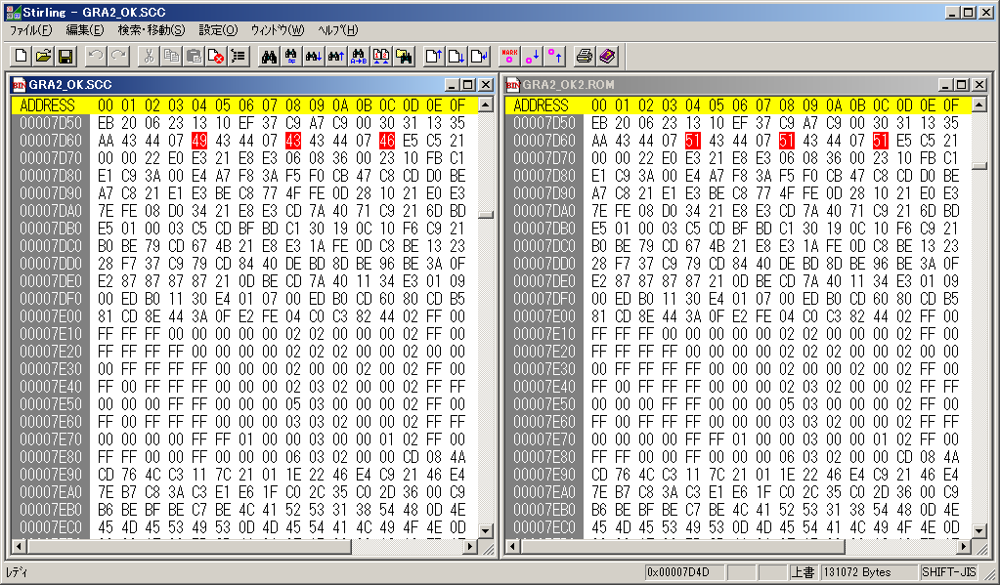
この部分に対してGRA2_OK(左)とGRA2_NG(右)の比較は以下の通り
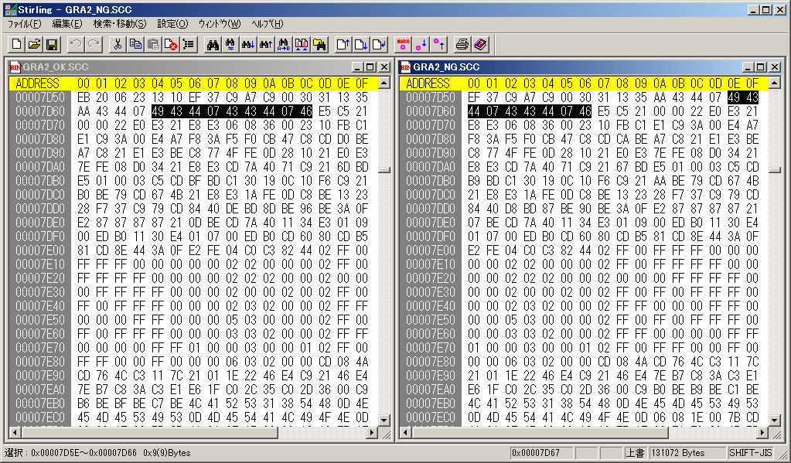
黒い部分がパッチ箇所です。GRA2_OKでは7D64h〜7D6Chですが、GRA2_NGでは7D5Eh〜7D66hと位置がずれています。
次にパッチファイル(GRADIUS2.XPC)をバイナリエディタで見てみます。
右側を見てみると、青で囲った最初の方は文字列であることが分かります。0054hの24h($)辺りで文字列が終わっているように見えます。その後の数字、赤で囲った部分を見てみると"01 39 00 00 6F"どこかで見たような数字です。そう、パッチの一箇所目の0039hが"6F"から"75"に置き換わっているのに対応しているようです。最初の01が書き換えバイト数、次の2バイトが8kB単位の中でのアドレス、次の1バイトがページ番号、以降に書き換えバイト数の分だけ書き換えるデータが並んでいます。
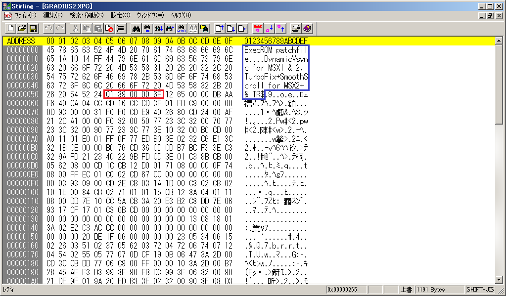
先ほど書いた相違点と重なっている部分の書き換えはパッチファイルの00B1hの1B CE 00 00からはじまっています。00CEhからの1Bh(23)Byteを書き換えています。
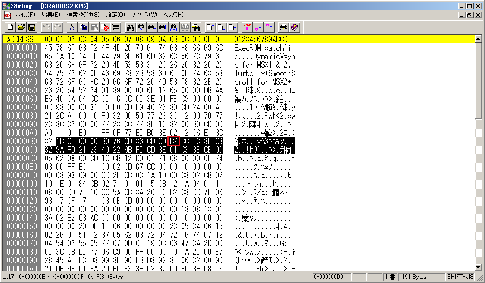
GRA2_OKとGRA2_NGの差は、"B7"が"B1"になっていることでしたので、このパッチファイル内の00BBhにある"B7"も"B1"にするのが良さそうです。
残りの3箇所についてのパッチデータはちょっと特殊でした。区切れが不明なのですが、いきなり文字列込みのデータになっていました。Backup weaponsとか'Penguin' modeとか文字列が並んでします。鍵は3Byte目にあるように思えます。最初の1Byte目はどうやらその文字列に関する書き換えデータの数、2Byte目は00hで3Byte目が01hより大きいときは文字列と見なされるようです。01hがどこから来たかというと、通常の2Byte目と3Byte目で8kB内でのアドレスを示しているので、3Byte目は00hか01hにしかならないはずだからです。
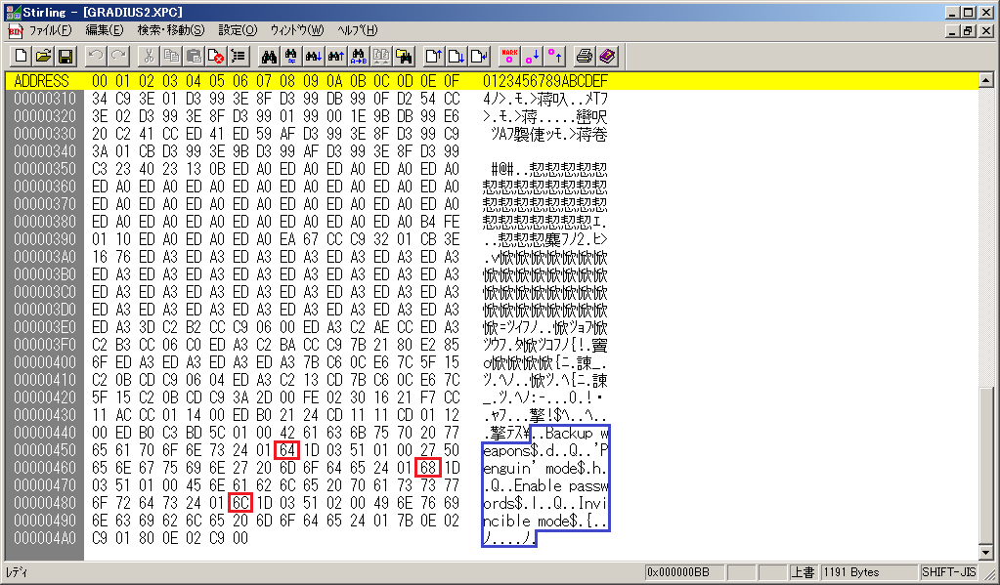
先ほど、2〜4箇所目の書き換えアドレスは7D64h〜7D6Chと書きましたが、8kB単位で考えると4ページ目（ページ番号は00から始まるので03）の1D64h〜1D6Chにあたります。つまり2箇所目の書き換えアドレスは64 1D 03となります。そのアドレスを7D5Eh〜7D66hにずらせば良いので、"64"を"5E"に、"68"を"62"に、"6C"を"66"に置き換えれば良いことが分かります。
あとはできあがったパッチファイルをGRADIUS2のROMにあてて完成です。この文字列の部分ですが、最後のInvincible modeというのが無敵モードで2箇所のC0をC9に置き換えています。このパッチをあてると自動的に無敵になってしまうので、それがいやな人はこの2箇所をC0に書き換えておくと無敵にならないようです。
話は戻り、漢字BASICが載っていないとMSX2+相当とは言えないとのご指摘を受けました(^-^; 漢字BASICはMSX2PEXT.ROMに含まれるものと勘違いしていました。前述の"MAKEROM.BAS"を実行して得られる"KNJDRV.ROM"がそれにあたるようです。ついでにFM BIOSも追加してしまいましょう。
漢字BASICの容量は32kBですが、4000hから32kBなので64kBのEPROM(27C512相当)を用意し、途中の32kBに書き込むことになります。
FM BIOSの容量は16kBですが、4000hから16kBなので32kBのEPROM(27C256相当)を用意し、後半の16kBに書き込むことになります。
もちろん、ぎりぎりの容量のEPROMを用意し、/CS1や/CS12を使って当該アドレスに割り当てても良いのかも知れません。/CSに/SLTSL、/OEに/CS1(16kBの場合)や/CS12(32kBの場合)、32kBの時はA14に/CS1？とかやれば良い気はしますが、よく分かっていません。小さいEPROM自体が入手出来ないので今回は深く考えないでおきます(^-^;
27C512及び27C256は既存のIC49またはIC58上に重ねるようにしてピンの足を半田付けします。私はIC49の上に27C256を半田付けし、さらにその上に27C512を半田付けしました。ただし、以下のピンはIC49とつなげません。
27C512：1ピン(A15)はIC57の9ピンに、20ピン(/CS)はR39の左側(＃SLT03/33)に、22ピン(/OE)は27C256の22ピン(/OE)と一緒にIC6の3ピン(/RD)につなげます。
27C256：20ピン(/CS)はIC29の13ピン(＃SLT3/30)に、22ピン(/OE)は27C512の22ピン(/OE)と一緒にIC6の3ピン(/RD)につなげます。
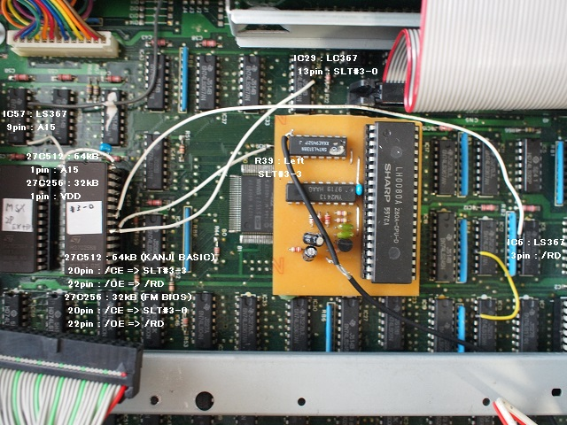
修正前は/OEも#SLTにつなげてしまっていました。写真は、本来上から27C512=27C256=IC49とすべき所を間違えて27C256=27C512=IC49としてしまったために1ピン周辺に余計な配線があります。またついでにパスコンも追加しています。
にがさん経由で入手した、"SLOT.BAS"（MSX・FAN 1994年12月号「おもちゃのマシン語」に収録されていたもの）でスロット構成を表示した結果がこちら。
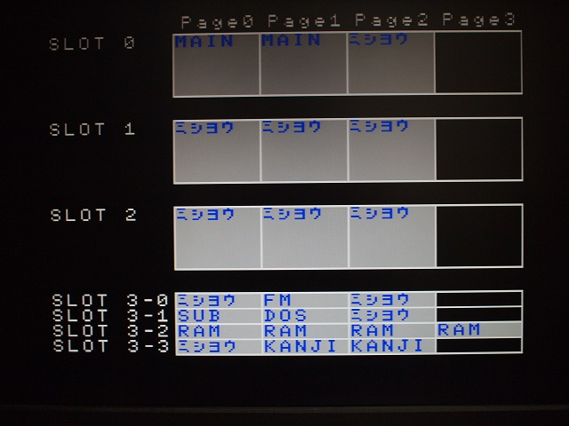
これでようやくMSX2+相当になりました。厳密にはMSX2+にはI/OのF4hにソフトウェアリセットを見分けるためのレジスタが必要なようですが、ここでは省略します。
お約束ですが、この噂を見て改造などを行い故障やその他問題が発生しても責任は負えません。各自の責任において情報を広く集めて行うことをおすすめします。